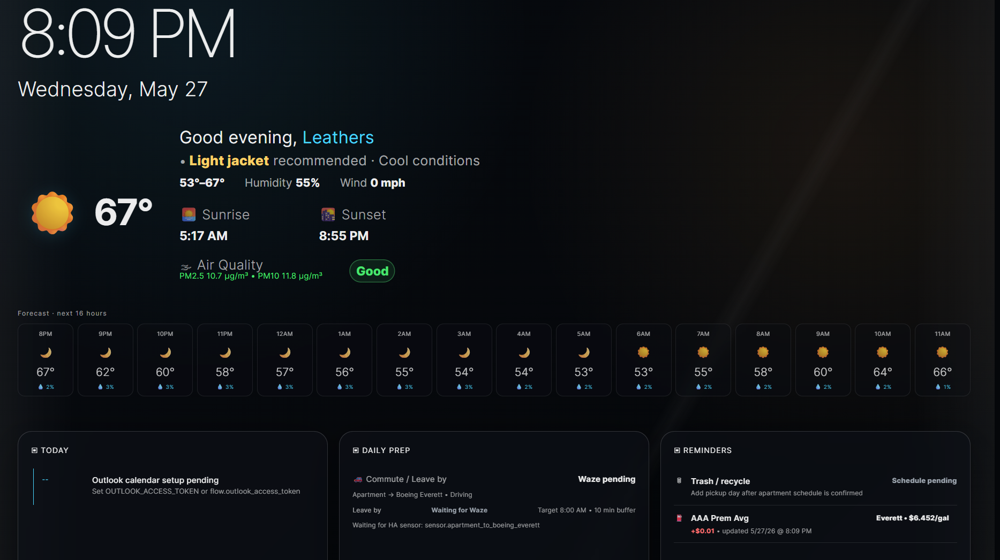
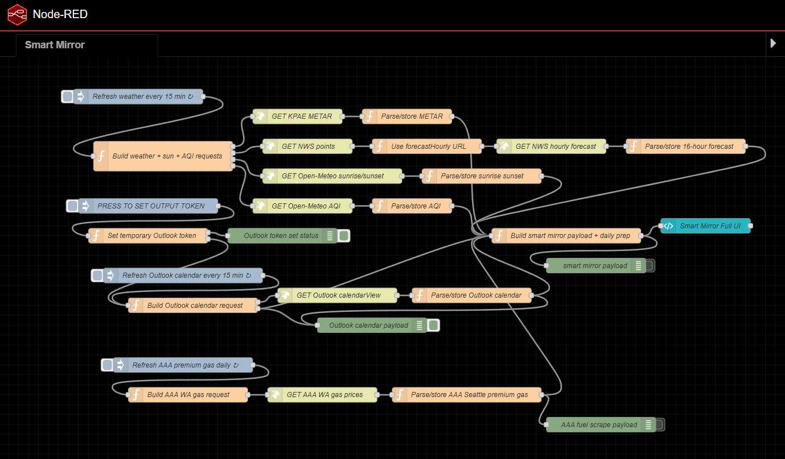

Fragmented inputs
Weather, calendar, AQI, fuel, and commute information all live in separate systems.
A locally deployed dashboard system that consolidates weather, forecast, sunrise/sunset, air quality, Outlook calendar, fuel pricing, and planned commute data into one glanceable interface.

The Smart Mirror is a local dashboard system designed to consolidate scattered daily information into a single, glanceable interface. Instead of checking several apps for weather, calendar events, air quality, commute readiness, sunrise and sunset times, and fuel prices, the mirror automatically collects those sources, normalizes the information, and displays it in a format that is useful at a distance.
The project is more than a visual dashboard. It is a small systems-integration project built around Node-RED and FlowFuse Dashboard 2.0. Node-RED handles automation, HTTP requests, parsing, storage, and payload assembly. FlowFuse Dashboard renders the final kiosk-style smart mirror interface.

The main problem this project solves is information fragmentation. Daily planning information is usually spread across weather apps, calendar apps, fuel-price websites, commute tools, and air-quality dashboards. That setup works, but it creates unnecessary friction before simple decisions such as what to wear, when to leave, or whether anything important is scheduled.
I approached the project from a systems-first perspective. The question was not simply, “Can I make a dashboard?” The better question was, “Can I build a reliable information pipeline that collects multiple external data sources, handles missing data, and presents the final result in a useful way?”
Weather, calendar, AQI, fuel, and commute information all live in separate systems.
JSON APIs, HTML scraping, token-based calendar access, and local-time formats all require different handling.
The mirror should keep running when one service is unavailable, expired, or still being configured.
The architecture is built around a simple pipeline: acquire the data, normalize it, store subsystem state, build a unified payload, and render the UI. Each subsystem is separated into its own branch so one failing data source does not automatically break the full mirror.
Independent branches: weather, forecast, sun, AQI, Outlook calendar, fuel pricing, and planned commute logic are handled separately.
Payload boundary: the dashboard receives one unified object instead of independently calling every external source.
Fallback behavior: missing or pending subsystems show setup or updating states instead of silently failing.
| Subsystem | Source | What is extracted | How it is used |
|---|---|---|---|
| Current weather | KPAE METAR | Temperature, humidity, wind, visibility, flight category, raw observation | Hero weather and daily prep context |
| Forecast | National Weather Service hourly forecast | Next 16 active or upcoming forecast periods | Forecast strip and outfit recommendation logic |
| Sunrise / sunset | Open-Meteo Forecast API | Local sunrise and sunset times | Hero environment section |
| Air quality | Open-Meteo Air Quality API | US AQI, PM2.5, PM10, ozone, NO₂ | Air quality badge and pollutant details |
| Calendar | Microsoft Graph Outlook calendarView | Today’s calendar events | Today panel |
| Fuel prices | AAA Washington fuel page | Seattle-Bellevue-Everett premium average and daily change | Reminders panel |
| Commute | Home Assistant / Waze sensor | Planned travel time from apartment to Boeing Everett | Daily prep and leave-by calculation |
Node-RED is the main integration layer because the project relies on multiple event-driven data flows rather than a single linear script. FlowFuse Dashboard 2.0 renders the final interface, while JavaScript function nodes handle parsing, formatting, decision logic, and payload assembly.
Main automation and orchestration layer for scheduled refreshes, branches, requests, parsing, and payload assembly.
Local smart mirror UI with custom full-screen dashboard layout.
Request construction, API parsing, state conversion, recommendations, and display logic.
Current observed weather at KPAE / Paine Field.
Hourly weather forecast for the Everett area.
Sunrise, sunset, AQI, and pollutant values.
Outlook calendar integration for Today panel events.
Premium gas price tracking for the Seattle-Bellevue-Everett area.
Planned commute travel-time input for Daily Prep.
My role covered the full system lifecycle: specification, integration, implementation, verification, and documentation. I defined what the mirror needed to do, integrated multiple external services, wrote the parsing logic, assembled the final payload, designed the dashboard layout, and verified subsystem behavior before relying on the full display.
The implementation started with the data refresh structure. Weather and calendar data refresh every 15 minutes, while AAA premium gas pricing is handled as a daily refresh branch. Each scheduled inject node starts a branch of the system.
Builds METAR, NWS forecast, sunrise/sunset, and AQI requests, then parses results into display-ready objects.
Filters expired periods so the dashboard shows the next 16 active or upcoming hours instead of stale data.
Builds Microsoft Graph calendarView requests and shows a setup/authentication state when the token is missing or expired.
Scrapes AAA Washington fuel pricing, extracts Seattle-Bellevue-Everett premium fuel average, and formats the daily delta.
The payload builder is the system integration point. It reads stored weather, forecast, sun, AQI, calendar, fuel, and planned commute values from Node-RED flow context, then sends one complete object into the FlowFuse Dashboard UI.
The outfit recommendation system checks the 16-hour forecast, current weather, rain probability, wind speed, temperature range, and condition text. The logic is intentionally deterministic so recommendations such as winter gear, rain jacket, windbreaker, light jacket, or comfortable layers can be tested, adjusted, and explained.
The project was verified branch-by-branch before trusting the complete dashboard payload. Testing focused on parser accuracy, refresh behavior, failure states, and whether the UI stayed readable instead of simply displaying every possible data point.
| Test area | What was checked | Purpose |
|---|---|---|
| Weather refresh | METAR, NWS, sunrise/sunset, and AQI requests | Confirmed each weather branch could be requested and parsed independently. |
| Forecast filtering | Expired hourly periods | Prevented stale forecast cards from appearing in the 16-hour strip. |
| METAR parsing | Temperature, dew point, humidity, wind, visibility, and altimeter fields | Converted aviation weather data into dashboard-friendly values. |
| Sunrise / sunset formatting | Open-Meteo local wall-clock strings | Prevented timezone-shifted sunrise and sunset values. |
| AQI categorization | US AQI and pollutant values | Confirmed the UI could show raw pollutant detail and a simple air quality status. |
| Outlook setup | Missing, temporary, and expired Microsoft Graph token states | Showed setup/authentication messages instead of breaking the dashboard. |
| AAA fuel scrape | Seattle-Bellevue-Everett premium fuel average and daily delta | Confirmed the fuel reminder uses the correct metro area and fuel type. |
| UI readability | Hero section, forecast strip, and lower panels | Confirmed the dashboard is readable at a glance and avoids unnecessary repetition. |
The UI originally repeated temperature information in multiple places. The layout was adjusted so the outfit summary stayed short while detailed metrics remained in a dedicated weather line.
The AAA fuel branch was adjusted so fuel pricing could update automatically instead of relying on manual triggering.
When the calendar token is missing or expired, the Today panel shows a setup state rather than incorrectly implying that the calendar is empty.
This project reinforced that a useful deployed system is not just the final screen. The dashboard matters, but the more important engineering work is behind it: data acquisition, parsing, failure handling, state management, integration boundaries, and verification.
A structured weather API behaves differently from an HTML scrape. A missing token is not the same as an empty calendar. A forecast feed can contain valid but stale periods.
By separating each subsystem into its own branch, AQI, calendar, fuel, weather, and commute logic can be tested and expanded independently.
The goal was not to display every data point. The goal was to convert raw signals into decisions: what to wear, what is scheduled, when to leave, and what to know before walking out the door.